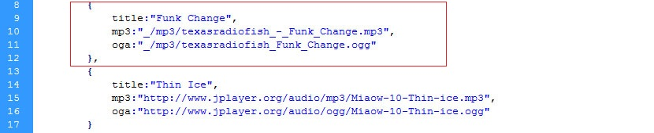
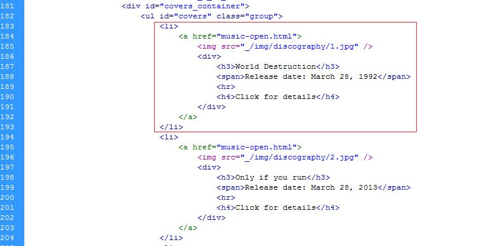
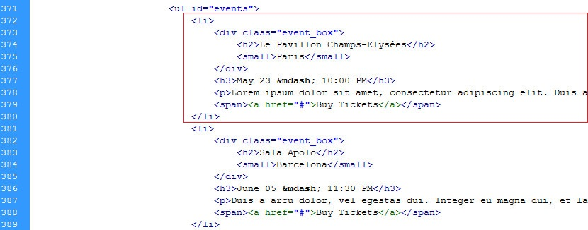
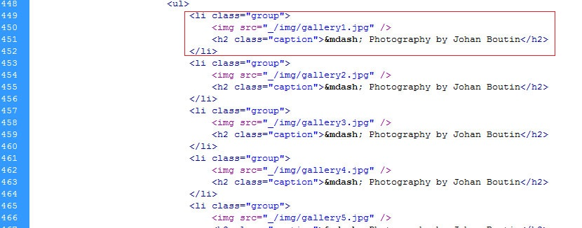
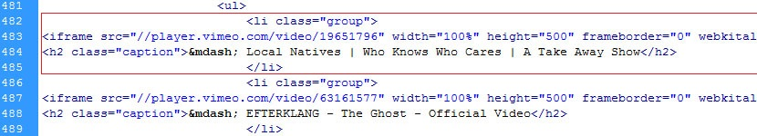
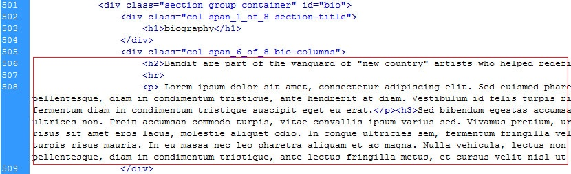
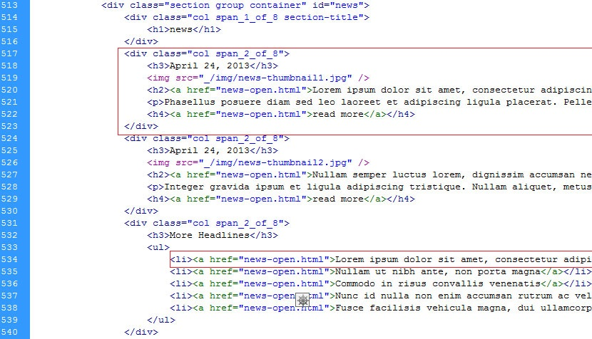
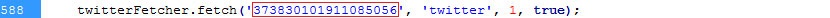
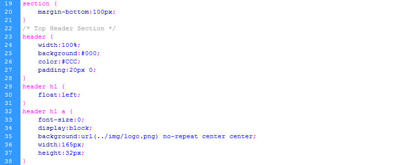

1. Presentation
Introducing Bandit.
A presentation template for musicians & bands. Designed specifically for indie and alternative artists, with a clean minimalist approach. Keep your fans up to date on your latest music releases, gig dates, pictures and videos. The integrated twitter feed and contact sections help you and your fans stay connected. The template also features a biography section and an easy to update news feed.
The template comes in two color variations - light and dark. Choose the one that represents you best.
Designed to work on all devices for reaching the broadest audience, it's the perfect choice for getting out of the garage and on to the World Stage!
Bandit Features
- MP3 Player
- Custom Slider
- Discography
- Events
- Photo & Video Gallery
- News
- Twitter Feed
- Contact Form
- Smooth Scrolling
- Ajax Content Loading
- Customer Support
- PSD File upon request
Folder structure of the downloaded archive
In the main folder called "bandit" you will find the following:
bandit-template
- _ contains all template assets
- css contains all the style-sheets
- img contains all the images used in the template
- js contains all javascript files
- mp3 contains the mp3 and ogg files for the music player
- index.html home page - light color scheme
- dark.html home page - dark color scheme
- music-open.html music page template - opens when you click the items in the "music" section
- news-open.html news page - opens when you click on a news item
- mail.php script used for sending the contact form email
bandit-documentation
- _ documentation assets
- index.html documentation page
Thank you again for buying the theme
Please read this documentation and if you have other questions contact us for suport.
2. Template Instructions
This section will help you figure out how to add news and albums, how to modify your email address that works with the contact form and how to customize the playlist for the music player and more.
Note: If you're working on the dark version, do the HTML modifications in the "dark.html" file.
Customize the playlist for the mp3 player

Steps:
- Find the file "playlist.js" in the "js" folder of your downloaded template.
- For adding a new song, first you need to duplicate the structure of one song, then replace the apropriate links and title.
- Place the song files in the "mp3" folder in the "_" folder.
- You need both the ".mp3" file and the ".ogg" file for compatibility on all browsers.
Add your email address for the contact form
Steps:
- Find the "mail.php" file in your template directory.
- Replace the default email address with your own.
Add/Remove albums from the gallery

Steps:
- Find the "index.html" file in your template directory.
- Duplicate an existing album cover structure.
- Modify the apropriate information including the link to the cover file.
- Place the cover image in the "discography" folder in the "img" folder.
- Duplicate the "music-open.html" file and modify the contents appropriatly. Make sure you name the file in accordance with the modified link in the above duplicated cover structure.
Add/remove events

Steps:
- Find the "index.html" file in your template directory.
- Duplicate an existing event structure.
- Modify the apropriate information.
Customize photo-gallery

Steps:
- Find the "index.html" file in your template directory.
- Duplicate an existing photo structure.
- Modify the apropriate information including the link to the photo.
- Place the photo in the "img" folder of the "_" folder of your downloaded template.
Customize the video-gallery

Steps:
- Find the "index.html" file in your template directory.
- Duplicate an existing video structure.
- Modify the apropriate information including the link to the video (embedded).
Customize your biography

Steps:
- Find the "index.html" file in your template directory.
- Modify the bio section to best reflect you.
- The section will automaticaly be divided on 3 columns.
Add/Remove news from the news gallery

Steps:
- Find the "index.html" file in your template directory.
- Modify and or duplicate an existing news structure including the link to the news file.
- Note: the template curently only supports 2 main news and more title-only news.
- Duplicate the news-open.html file from your template directory and modify the info inside accordingly. Name the file in accordance with your modified information in the news structure.
Customize twitter feed

Steps:
- Find the "functions.js" file in the "js" foloder of your downloaded template.
- Replace the default id with your generated widget id.
- Log in to your twitter account.
- Go to setting > widgets > create new > create widget
- There will be a section after these steps where a code will be generated. You can get your id from there.
Customize visual aspect
Note: The "dark.css" file contains the color proprieties of the dark theme variation.

Steps:
- Find the "style.css" file in the "css" foloder of your downloaded template.
- Modify the code accordingly.
3. Sources and Credits
Fonts
Music Player
Scripts
Images
Used in the demo available here. Not included in the download.